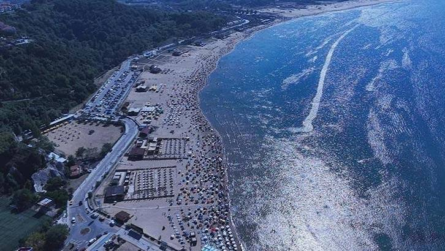

Gelişen OlayŞile sahillerinde cankurtaran sayısı iki katına çıkarıldı
Ağustos ayındaki üç boğulma vakasının ardından Kumbaba, Uzunkum ve Sahilköy plajlarında görevli ekip sayısı 14’ten 28’e yükseltildi. Yeni kadro eylül sonuna kadar görevde kalacak.